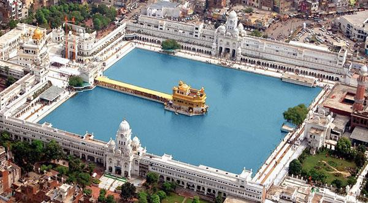
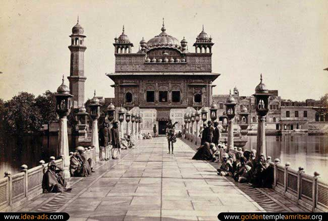

The Golden Temple Amritsar India (Sri Harmandir Sahib Amritsar) has a unique Sikh architecture. Built at a level lower than the surrounding land level, The Gurudwara teaches the lesson of egalitarianism and humility. The four entrances of this holy shrine from all four directions, signify that people belonging to every walk of life are equally welcome.
history of golden temple amritsar
Sri Harmandir Sahib, also known as Sri Darbar Sahib or Golden Temple, (on account of its scenic beauty and golden coating for English speaking world), is named after Hari (God) the temple of God. The Sikhs all over the world, daily wish to pay visit to Sri Amritsar and to pay obeisance at Sri Harmandir Sahib in their Ardas.
Guru Arjan Sahib, the Fifth Nanak, conceived the idea of creating a central place of worship for the Sikhs and he himself designed the architecture of Sri Harmandir Sahib. Earlier the planning to excavate the holy tank (Amritsar or Amrit Sarovar) was chalked out by Guru Amardas Sahib, the Third Nanak, but it was executed by Guru Ramdas Sahib under the supervision of Baba Budha ji. The land for the site was acquired by the earlier Guru Sahibs on payment or free of cost from the Zamindars (landlords) of native villages. The plan to establish a town settlement was also made. Therefore, the construction work on the Sarovar (the tank) and the town started simultaneously in 1570. The work on both projects completed in 1577 A.D.
Famous Places Near Golden Temple
Maharaja Ranjit Singh Museum

Dedicated to Maharaja Ranjit Singh, ‘the Lion of Punjab’, who freed a major part of Punjab from the shackles of the Mughals, the Maharaja Ranjit Singh Museum is located in Lawrence Road, Company Bagh of Amritsar. The museum displays the chivalric activities of the Maharaja along with artefacts associated with the greatest battles he fought with his enemies. The light and sound show creates the feel of a real war situation with the booming sound-effects taking you to the past.
Jalianwala Bagh

Located within a distance of one kilometre from the Golden Temple, Jalianwala Bagh is the famous public ground where the heinous act of public massacre was done by the British Army. The incident took place on 13th April, 1919 which was the Punjabi New Year Day. It is on this auspicious day that British occupying forces brutally opened fire on a peaceful mass and as a result around 379 people were left dead and around 1100 people wounded. In 1951 a memorial was established on this ground to commemorate the massacre. Today a huge memorial stone is found in Jalianwala Bagh where every traveller in Punjab pays his/herhomage.
Wagah Border

Wagah Border is one of the must visit places of tourist Interest around Golden Temple in Amritsar and has established itself as a firm favourite among the Indian tourists. It is the only road border crossing between India and Pakistan and located at a distance of around 30 km from the Golden Temple. The ceremony of Beating Retreat and Change of Guard make this place highly valued. The soldiers of both the countries demonstrate their heartfelt enthusiasm for own country and the nationalistic feel reaches its peak among the viewers present there in the afternoon. This entertainment ceremony involves display of intense patriotic feel of the armies for their respective states and people assemble here every day to witness this exciting activity in either side of the border.
Famous Hotels Near Golden Temple
Hotel Darbar View Bazar Mai Sewan, Near Golden Temple, Amritsar

Hotel Randhawa International J & K Road, Amritsar 143001, India 0.1 km from Harmandir Sahib

Hotel City Heart Near Golden Temple, Amritsar 143001, India 0.2 km from Harmandir Sahib

Go TO Top
Go To Previous Page